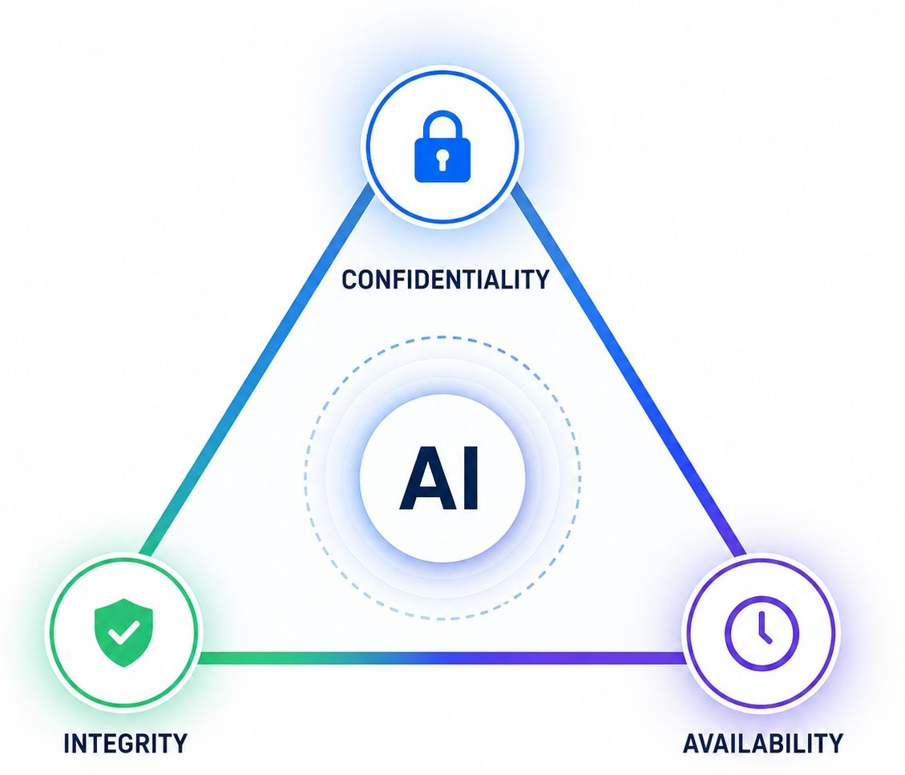

If you've ever taken a cybersecurity course, beginner or advanced, the CIA triad was probably one of the first things you learned. Confidentiality, Integrity, Availability. Three words that seem simple enough on the surface but carry the weight of the entire discipline. Nearly every security concept, framework, or incident response playbook traces back to at least one of these pillars.
To understand why, let us consider how a security incident targets the CIA triad. A data breach that exposes private records compromises confidentiality. A DDoS (Distributed Denial-of-Service) attack that takes down critical systems compromises availability. A man-in-the-middle attack where an adversary silently alters data in transit compromises integrity. One event, three possible fault lines.
Ransomware is perhaps the most visceral example of why the triad matters. It hits all three simultaneously: encrypted files lock out legitimate users (availability), stolen data threatens exposure (confidentiality), and an unauthorized actor has moved freely through systems they should never have touched (integrity). That's why ransomware feels so brutal. It doesn't just break one rule, it breaks the whole framework.
Hence, the CIA triad remains the truest, most fundamental concept in this industry. Anything built in cybersecurity can be mapped back to it. That hasn't changed.
What has changed is the environment we're operating in.
So where does AI fit?
AI is no longer a future consideration, it's here, embedded in our tools, our workflows, and increasingly in our personal lives. Organizations are scrambling to get AI policies in place, and rightly so. But in the rush to govern AI at the policy level, I think we risk skipping a critical step: going back to basics.
If we map AI against the CIA triad, where does it help, and where does it disrupt? Get a clear enough answer there, and you have a principled foundation for what to empower and what to govern.
Confidentiality
AI can detect anomalous access patterns, flag insider threats, and auto-classify sensitive data faster and more accurately than manual processes. But it cuts both ways. LLMs trained on organizational data can leak sensitive information through their outputs, and employees feeding proprietary data into public AI tools is already a widespread exposure most security teams haven't caught up to yet.
Integrity
AI automates tamper detection and makes continuous auditing possible. What once took days now happens in real time. The flip side is uglier: deepfakes, AI-generated phishing that's nearly indistinguishable from legitimate communication, and adversarial attacks that poison datasets without triggering any alarms. We now have to defend the integrity of the AI systems we're trusting to protect us.
Availability
AI-driven threat detection and automated response reduce downtime and keep systems accessible. But it also lowers the barrier for attackers. AI-assisted DDoS campaigns adapt in real time, and vulnerabilities are being discovered and exploited faster than most organizations can patch them.
The takeaway
AI doesn't replace the CIA triad in any means, it stress-tests it. Every capability AI brings to the table has a corresponding threat vector, and the organizations that will navigate this best aren't the ones with the most sophisticated AI policy documents. They're the ones that went back to basics first.
Map your AI use cases to the triad. Where is AI strengthening confidentiality, integrity, and availability, and where is it creating new cracks? That exercise alone will tell you more about your actual risk posture than most compliance frameworks will.
The fundamentals didn't get less relevant when AI arrived. They got more important.
Check out my website to learn more about my work in GRC, AI strategy, cybersecurity, and the projects I'm building.
Visit my portfolioDeandra Rodricks is an AI and cybersecurity strategist with experience spanning GRC, threat analysis, and enterprise security programs. Connect with me on LinkedIn.